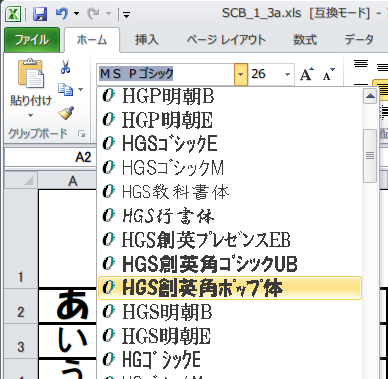

かならずお読みください→
しゃべる文字盤クリック with AquesTalk
Windows XP+Excel2000 と Windows 7+Excel2010 と Windows 10+Excel2013 で動作確認しています
Microsoft Excel for communication aids
はじめに
伝の心もレッツチャットも文字盤をスキャン（scan＝走査［そうさ］）して目的の文字を選ぶスキャン入力方式のコミュニケーションエイドです。スキャン入力方式とは文字盤全体をいくつかに分割しそれらを順番に色を変えるなどして提示し、その提示に合わせてスイッチ操作で入力して選択し、この手順を何段階か繰り返し目標を絞り込み、選択す る方法です。この方式は一つのスイッチ操作で利用できる利点がありますが、選択に時間がかかるといった欠点もあります。また操作間違いすると待ち時間が長くなるのでいらいらがつのります。このためスキャン入力方式のコミュニケーションエイドでは、『上手に待つ練習』も必要になります。これまで多くの方の練習のお手伝いをしました。スキャンを待ちきれない「せっかち」タイプの人も、スキャンを見逃してしまう「のんびり」タイプの人もおられます。しかしどちらかというと「せっかち」タイプの人がかなり多いようです。操作できるスイッチがひとつだけの場合には、残念ながらこの欠点も辛抱するしかありません。
この他の方式のひとつとして、マウスで文字盤をクリックして特定の文字 を選択する直接入力方式があります。この方法では手順がより自然で直接的なので理解しやすく、イライラも少なくなります。しかしマウス操作が十分できないと実用性に欠けるため、麻痺が軽い人以外には直接入力方式は難しいと考えられていました。マウスといえば普通のマウスしか手に入らない古い時代には、こう考えるのも無理のないことでした。このような事情もあってスキャン入力方式のコミュニケーションエイドがいつしか主流となりました。
今回ご紹介するマウス直接入力方式の『しゃべる文字盤クリック』は、ある患者さんのご要望がきっかけで作ることになりました。その患者さんはもともとパソコンを日常的にお使いでした。デスクトップをコミュニケーションエイドに占領されたくない。メールはメーラーで、ネットはブラウザで、文書はオンス クリーンキーボードでとのご希望でした。この時点ですでにマウス操作も苦労されていましたが、パソコン操作のひとつひとつに自分の意思が強く反映できるマウス操作が気に入っていました。（同時にスキャン入力方式がずいぶんおきらいでした。）病状が進むにつれて、マウスはタッチパッドに変更され、また自動クリックソフト（マウスカーソルを一定時間停止させると自動的にクリックする。できクリック。など）も使うようになりました。当時調べてみると、数多くの有用な代替マウス（通常のマウスと同じ働きをする不自由でも使えるさまざまなマウス）が存在しましたので、次はface mouse（カメラで顔の動きを撮影しその向きでマウスカーソルを動かすソフト）、その次は、できマウス。（スキャン操作するマウスソフト、スイッチで操作する）と次々とマウスを変更していけば、なんとかご本人の意向に沿った形で使い続けていけそうなこともわかりました。このように多様な代替マウスが選択できるとなると、直接入力方式にもメリットが出てきます。
また外国製のマウスは、日本人ユーザーが使用しても困ることが比較的少ないというメリットもあります。例えばface mouseはイタリアの人が開発し、イギリスの会社がネット販売しています。説明の英語表記が気にならないなら、これを日本で使用しても特に問題ありません。またcamera mouseは、ボストンカレッジの人々が開発し公開していますが、これも基本的な使用には特に問題ありません。このようにマウスそれ自身に優れた特徴があるなら、部分的な外国語さえ問題なければ（または気にしなければ）選択の対象になることもあります。外国製のキーボードやコミュニケーションエイドでは言葉の壁のため、同じようにならないのと大違いです。
これまでコミュニケーションエイドにおいて主流になりにくかったマウス直接入力方式ですが、有効な代替マウスの利用と合わせて、その可能性を再検討する意味は大いにあ る と考えています。これまでの方法では満足できない人々、その多くはパソコン利用の経験がある程度以上あり、教えられたとおりにやるより自分なりの方法で実行したい、このような人々がコミュニケーションエイドに取り組む場合に、より多くの選択肢をあらかじめ準備しておくことは、利用者の満足のほか取り組みに対する意欲を引き出し、維持するためにも必要と思います。
概要
『しゃべる文字盤クリック with AquesTalk』はマイクロソフトエクセルで作ったコミュニケーションエイドです。使用するためにはマイクロソフトエクセルがインストールされているWindowsパソコンが必要です。『しゃべる文字盤クリック with AquesTalk』のファイルを開くと、
「しゃべる文字盤はじまります」と発声しこのページの一番上のように表示されます。基本的機能はシンプルです。文字が表示された長方形の枠をマウスでクリックすると、文字が読み上げられ、最上部の表示部分に選択した文字が記入されます。また全部消すには、「全消」、一文字消すには、「一消」をクリックします。ワークシートのタブをクリックすると、５０音、あいさつ、からだの３種類の文字盤を切り替え出来ます。文字盤を切り替えても文章表示部分は変わりませんから、文字盤を切り替えながら文章作りを続けることができます。また５０音文字盤をクリックした際の発声は、５０音発音記号ワークシートに書かれています。これはあいさつ文字盤でもからだ文字盤など他の文字盤でも同様です。これらの文字盤では、発音記号文字場の同じ行列のセルに書かれた言葉を発生します。つまり、あいさつ文字盤のｂ２セルをクリックすると、あいさつ文字盤発音記号ワークシートのｂ２セルに書かれたとおりに発声します。発声は、ひらがなを主体としたAquesTalkの発音記号方式で書かれています。（発音記号の詳細は、株式会社アクエストのサイトで公開されている、AquesTalkのマニュアルを参照ください）
さらにこのしゃべる文字盤には大きな特徴があります。それは、文字盤の表示文字の大きさ、色、配置、セルの数、連結など、さらに文字盤の数など自由に改造できますので、使う人のお体の条件（特に視力）やお好みに合わせることが可能です。家族の名前など固有名詞を追加することも可能です。これら目にする表示や耳にする言葉に関係する部分をお使いになる方に合わせて変更ができます。またこれらの操作は、エクセルの基本操作方法そのままでできます。エクセルの操作にある程度習熟していれば容易に作業に取り掛かれます。
さらにＶＢＡ(Visual Basic for Application)Excelのプログラムを利用すれば、電子メールやホームページの閲覧などＷｉｎｄｏｗｓのさまざまな機能を盛り込むことが可能になります。このようにベッドサイドの技術支援には広く普及した方法で、さまざまな機能を実現する開発には奥行きの深さを持たせてあります。（実際にはエクセルがこのような特徴をもつように設計されているので、結果としてしゃべる文字盤シリーズも同じ特徴を持つことになりました。）
しゃべる文字盤のダウンロード
『 しゃべる文字盤クリック with AquesTalk』はこちらからダウンロードできます。
方法，下記の青文字を『右クリック』→『対象をファイルに保存』でパソコンに保存できます．『 しゃべる文字盤クリック with AquesTalk』 （SCB_1_3a.xls 124kB）
その他の準備
『 しゃべる文字盤クリック With AquesTalk』では人工合成音声AquesTalkを使用しています。利用前に、AquesTalkのパソコンへのインストールが必要です。初めてAquesTalkをお使いになる方は、こちらの手順書に従ってインストールしてください。すでにインストールしている方は次にお進みください。
しゃべる文字盤を使用するためには、お使いのエクセルのセキュリティー設定を変更する必要があります。しゃべる文字盤が起動しない、ファイルが開いても、動作しないなどの原因のひとつがセキュリティー設定です。まだ設定変更していない方は、こちらのページの方法に従って変更してください。既に変更してある場合は次にお進みください。
「しゃべる文字盤」シリーズはお使いになる方と周囲の方々の状況や好みに合わせて、調整や変更が可能です。作業を行うためには、まずマクロを止める必要があります。マクロの停止方法はこちらで説明しています。既にご存じの方は次にお進みください。
しゃべる文字盤クリックでは、ワークシートには意図しないデータ消失や改変を防ぐために一部のセル（一番上の文章表示用のセル）を除いて保護がかかっています。これは安全装置のような役割をしています。作業の前にワークシートの保護を解除してください。保護のかけ方と外し方はこちらで説明しています。既にご存じの方は次にお進みください。
メンテナンスの例 その１ 表示文字の大きさの変更
まず、使う人の視力に合わせて、表示の大きさを調整してみましょう。マクロを停止すると、メニューバーやツールバーが表示されたままで残りますので、操作しやすくなります。
表 示の大きさを調整する方法には大きく２種類あります。まずエクセル表示のズームを調整して全体の表示を一括して変更する方法です。やり方は、表示＞ズーム＞倍率選択です。（この他にも実にたくさんの方法があります。興味のある方は『エクセル ズーム』で検索してみてください。ctrl＋マウスホイールは多くのアプリケーションで使えます。）まずはじめはこの方法での調整をお勧めします。
また文字数が多いセルや、漢字のセルは一般に見えにくくなります。他の部分はそのままで見えにくい部分だけ手直しする方がよい場合もあるでしょう。この場合は、修正する セルをクリックし、フォントの大きさを変更します。ゴシックフォントやボールド（太字）を指定するとさらに見やすいようです。（さらにMacTypeといったWindowsのフォント表示を改善するソフトも有効かもしれません。）視覚に困難をもつ方には、背景色と文字色の組み合わせを工夫すると見やすくなることもあります。 これは、セルの書式設定で背景色と表示文字のフォントの設定で色を変更すればできます。

文字盤の あ のフォントを変更 エクセルの見慣れた方法でできる
表示文字を大きくするとセルの大きさが足りなくなるかもしれません。その場合はセルの中で改行するか、セルを拡大してください。（セルの中で改行、セルの拡大と検索するとすぐわかります。）セルを大きくするとモニターに全体が収まらないかもしれません。そのような場合は大きなモニタへ変更するか、元のままでモニタを近くに置くか変更が必要かもしれません。
コミュニケーションエイドを使い始めたばかりでは特に目が疲れます。取り組みを始めたばかりの患者さんにとって文字を注視するのは久しぶりのはずです。さらに視点があちこち移動します。その上操作にも気を使わなくてはなりません。こんな時にはまずよく見えるように設定し、疲れが少なくなるように配慮が必要です。その上である程度長い時間取り組みができるように体調を整えることがよい結果につなげる第一のポイントです。さらに照明や画面の映り込みや反射にも気をつけたいものです。『よく見えないよ』の一言が出せない人が相手ですので、周囲の細やかな気配りが必要です。このような準備が不十分なまま操作方法の学習などの負担が加わると、ゴールにたどり着くまえの早すぎるあきらめなど思わしくない結果につながることもありますので、十分な注意が求められます。反対に徐々にからだが慣れ、疲労も少なくなると、これが自信につながることもあります。取り組みはスロースタートをお勧めします。
メンテナンスの例 その２ 表示文字の変更 発声の変更
次は文字盤の文字を変更してみましょう。５０音文字盤の右上に吸引があります。ここをクリックすると、「吸引」の２文字が上の表示部分に加わります。吸引の代わりにこの場所に違 う言葉を入れてみましょう。例えば「のどがかわいた」に書き換えて（保存し、ファイルを閉じ、再度起動し、その後）クリックすると、こんどは「のどがかわいた」と入るようになります。もっと長い文でも同じようにできます。またその他の空欄でも同じことができます。原理的にはワークシートのすべてのセルを利用することができます。よほどたくさんお使いになりたい人でもこれなら不足することはないでしょう。
入力される文字は上の操作で変更できます。しかし発声は『吸引してください』のままです。発声を変更するには、５０音音声記号のワークシートの、B11セルを『きゅーいん/してくださ’い』 を 『のど’がかわきました』に変更します。（音声記号は全部ひらがなでもかまいませんが、より自然な日本語にするにはこの例のように、/や’や_スなどを使います。詳しくはＡｑｕｅｓＴａｌｋのマニュアルを参照ください）これでクリックした時の発声が変更できます。同様の手順で、ワークシートのＡ１を除くすべてのセルに追加変更できます。特に発声させたくな い場合は、音声記号『。』を記入しておくと無音のまま声が出ません、単に空欄だとエラーが出ます。
50音文字盤、あいさつ文字盤、からだ文字盤は都立神経病院が提唱している、文字盤の事例を参考にしました。より多くの人に利用できるように配慮したためでしょうか、からだ文字盤にはありとあらゆる部分の不調を訴えられるようになっています。一見するとこれは便利なようですが、幸いにも不調が一部にしかない人にとっては、めったに使わない言葉が並んでいるので使いにくくなってしまいます。このからだ文字盤こそお使いになる人に合わせて整理するとぐっと使いやすくなります。
変更作業が終了したら、ワークシートの保護を忘れずにかけましょう。
OPTIONのワークシートのA7セルで発声速度を設定できます。標準速度が１００です。５０は早口、１２０は早口です。
代替マウスについて
このページでは、マウスで文字盤をクリックし目的の文字を選ぶコミュニケーションエイド、『しゃべる文字盤クリック』を紹介しました。これでマウスさえ使えれば、スキャン方式のコミュニケーションエイドよりもいくらか快適に使えるようになります。
しかし少し前まで、『身体が不自由なので普通のマウスが使えません』とおっしゃってあきらめてしまう人もたくさんおられました。たしかに、『普通のマウス』は手や指が正確に微妙に上手に動かせないとうまくいかないことがよく有 ります。もしかしたらキーボードよりも難しいかもしれません。といってもそれだけで、あきらめる必要はまるでありません。『普通ではないマウス』もあるからです。これらはまとめて代替マウスと呼ばれています。
まずパソコンには標準で補助機能が備わっています。Windows７では、コントロールパネル＞コンピュータの簡単操作センター＞マウスを使いやすくします、で何種類かの対策を利用することができます。困ったら、まずこれを試すことから 始めることをお勧めします。なにしろ無料で、目の前にありますから話が早いです。同様のものがアップルコンピュータのパソコンにも備わっています。
次に代替マウスがあります。『代替マウス』は普通のマウスが苦手な人や特殊な使い方をしたい人向けに作られたものです。商品も何種類もあります。しかしパソコンショップや家電量販店のパソコン用品売り場には多分ありません。これらは福祉用具サイト，ＡＴ２ＥＤ（http://at2ed.jp/） などで紹介されていますので関心のある方は是非ご覧になってください。この他にも検索するとたくさんの代替マウスが見つかります。どうしてこれだけたくさんの種類があるのでしょう？ふしぎですね、でも理由は簡単です。マウスがうまく使えないと困っている人々、そのひとりひとりの困り様はそれぞれ違うからです。（アンナ・カレーニナみたいですね）
ですので、代替マウスのどれでもいいから手に入れればうまくいくわけではありません。使う人の状態や目的や好みに合った道具を選び、使い方を考えながら、使いこなす練習が大変重要になります。また同じ病気の別の人がうまくいった道具や方法を試しても、うまくいくこともそうでないこともあります。
最近ではインターネットにさまざまな情報があふれています。
顔の動きで操作するマウスソフト face mouse http://www.clarointerfaces.com/category/claro-facemouse.php?id=free-face-mouse
同じく camera mouse http://www.cameramouse.org/
眼球運動でマウス操作を行う試みも各地で行われています。技術的にはほぼ完成しているようですが、商品化やビジネスとして成立するにはまだ困難があるようです。
まとめ
今 回ご紹介した『 しゃべる文字盤クリック with AquesTalk』はお使いになる方が目にする文字と耳にする声を、エクセル操作のみで変更，拡張ができるようになっています。これは、利用する方々の生活に合わせて透明文字盤を手作りするのと同じく、コミュニケーションエイドという道具も生活に合わせて変更できる点が最大の特徴です。
表示が見えない、音が聞こえない、操作が覚えられない、意味がわからない、自分にあっていない、などの理由で従来の機器や方法をあきらめてしまった人にはそれぞれそれなりの原因があるはずです。製品が自分に合っていなかったとあきらめるひともおられますが、あきらめたくない人や、何とかしたい人、そしてこのような人を手助けしたい人々にはこういったものを考えていただきたいと思います。
マイクロソフトエクセルでコミュニケーションエイドを作ることにした理由は、コミュニケーションエイドの文字盤の文字の形や大きさや色や配置を、使いやすいように、見やすいように簡単に変更できるようにして、しなくていいあきらめをより少なくするためでした。また操作方法がエクセルと同じですので、使い方を知っている人を見つけるにしても、自分で勉強するにしてもより取り組みやすくなるでしょう。
201３/0９/１８ 公開